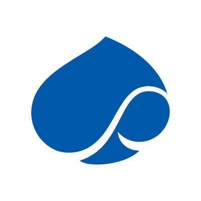
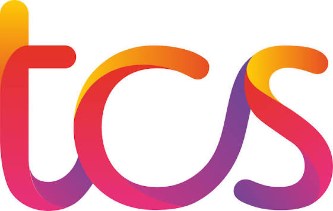
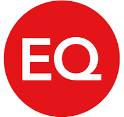
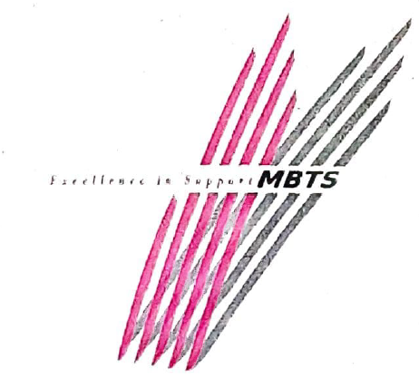
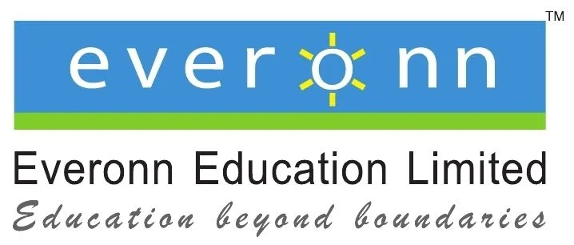
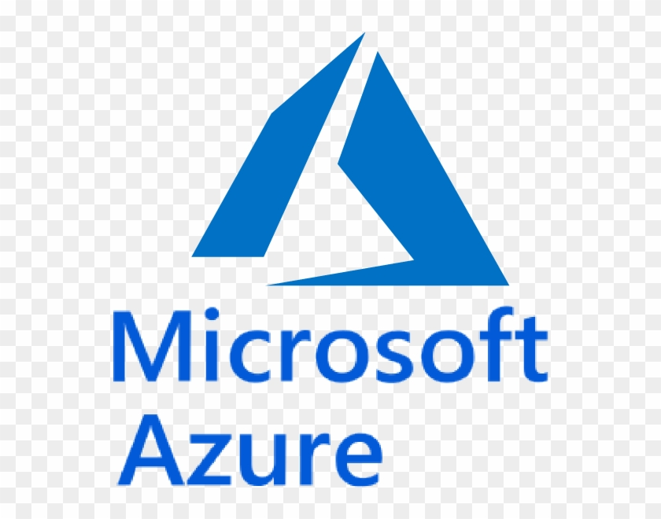
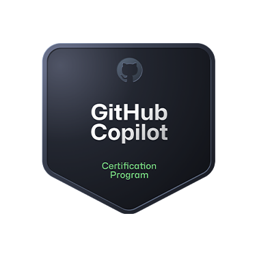

Championing Advancing Frontier AI & Modern Engineering
Frontier AI & Modern Engineering Leadership · Microsoft
I believe AI becomes truly powerful when it’s built responsibly, thoughtfully, and with people at the center. My work focuses on advancing Microsoft’s vision for intelligent systems, modern engineering, and empowering individuals and teams to adopt AI with clarity and confidence.
This space reflects how I think about AI, leadership, and the future of technology and how I contribute to the community around it.
Impact & Focus
Leadership in AI begins with clarity of impact. These are the areas where I focus my energy and expertise.
Responsible AI Advocacy
Advocating for responsible, trustworthy AI aligned with Microsoft’s principles, ensuring systems are reliable, ethical, and built for long-term impact.
Intelligent Architecture
Designing intelligent, cloud-native architectures that help teams adopt AI confidently and scale modern engineering practices.
Community Leadership
Sharing insights, frameworks, and clarity to help individuals and teams navigate the evolving AI landscape with purpose and direction.
Journey
A path shaped by curiosity, responsibility, and a commitment to building meaningful technology.
Microsoft
Dec 2021 – Present
Advancing AI and cloud solutions, shaping intelligent applications and guiding customers and teams on modern architectures and responsible AI adoption.

Capgemini
Aug 2021 – Dec 2021
Enterprise consulting experience, focusing on delivery excellence and complex solution landscapes.

Tata Consultancy Services
Apr 2015 – Aug 2021
Built large-scale systems, learned discipline, governance, and how to operate within complex enterprises.

Equiniti India
Nov 2013 – Apr 2015
Strengthened my foundation in financial systems and enterprise-grade applications.

Multibasic Technology (MBTS)
Jun 2011 – Nov 2013
Hands-on development, building solutions end-to-end and learning by doing.

Everonn Education Limited
Jan 2010 – Sep 2010
Early exposure to education technology and the intersection of learning and systems.
Total Experience: 14+ years
Credibility
Continuous learning is foundational to leadership these certifications reflect my commitment to staying ahead in AI, Cloud, and engineering.

Agentic AI Business Solutions Architect
Designing agentic AI solutions that solve real business problems with reliability and scale.
Azure AI Engineer Associate
Building and deploying AI solutions on Azure using responsible AI practices.
Azure Developer Associate
Designing and implementing cloud-native applications on Azure.

GitHub Copilot
Using AI-assisted development to accelerate high-quality engineering.
DevOps Engineer Expert
End-to-end DevOps practices, CI/CD, and automation for modern engineering teams.
Azure Administrator Associate
Managing and operating Azure environments securely and efficiently.
Azure Solutions Architect Expert
Architecting robust, scalable, and secure solutions on Azure.
AI Transformation Leader
Driving AI adoption and transformation across organizations.
Security, Compliance & Identity Fundamentals
Foundations of security and identity in the cloud.
Azure AI Fundamentals
Core AI concepts and Azure AI services.
Programming in HTML5 with JavaScript and CSS3
Strong foundation in modern web development.
Microsoft Certified Professional
Early milestone in my professional certification journey.
Connect With Me
I actively support the global AI community by sharing insights, frameworks, and practical guidance shaped by my experience at Microsoft. If you’re exploring responsible AI, Cloud, or modern engineering, I’m open to meaningful conversations that help people move forward thoughtfully.
Where I Share
I use writing and content to help the AI community think more clearly about responsible adoption and modern engineering.